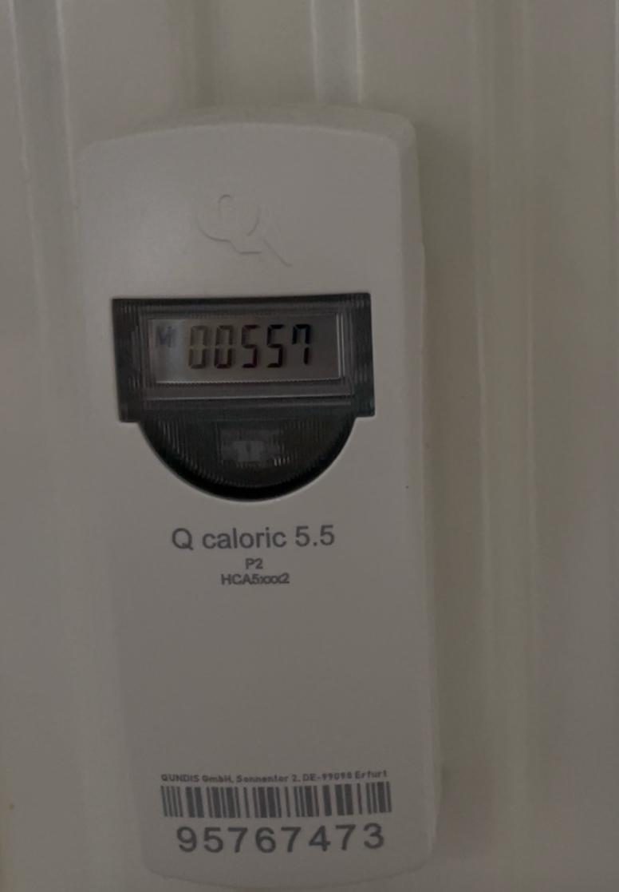
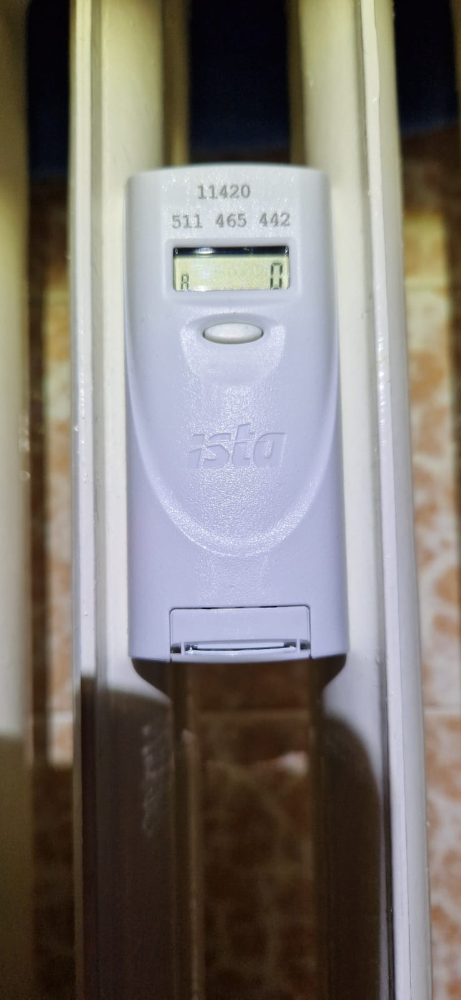
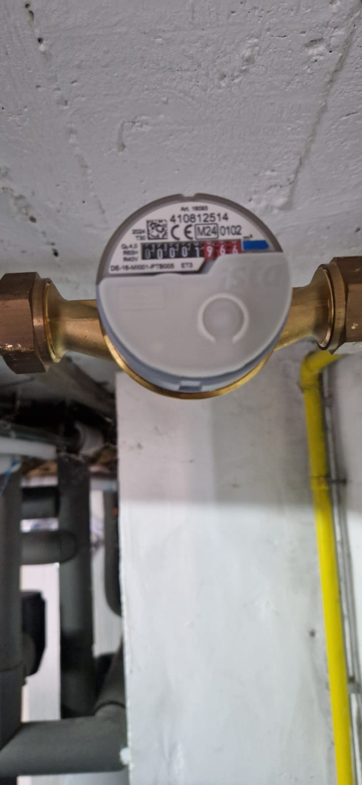

So tragen Sie Ihre Zählerstände ein
Spalten: M/A und Aktuell
Oben können Sie die Spalten M/A und Aktuell ein- oder ausblenden.
M/A (Memory/Stichtag) – Speziell bei Heizungen der Wert aus dem Speicher. Bei anderen Zählern der Stand zum Stichtag.
Aktuell (Ablesewert) – Der am Gerät aktuell abgelesene Wert.
In der Regel reicht eine Spalte. Ihr Verwalter teilt Ihnen mit, welche Sie verwenden sollen.
Rechts oben steht das Ablesedatum. Es ist automatisch auf heute gesetzt. Ändern Sie es bei Bedarf.
Für jeden Zähler geben Sie den aktuellen Wert in das Eingabefeld ein. Ausgefüllte Felder werden grün markiert.
Drücken Sie auf „Speichern". Nur ausgefüllte Felder werden übertragen.
Exportieren Sie das PDF, unterschreiben Sie es (oder lassen es unterschreiben) und laden Sie das unterschriebene Dokument über das ↑ PDF Symbol oben wieder hoch. Ein grünes ✓ PDF zeigt den Erfolg an.
Heizung / Heizkostenverteiler
Wert hinter „M" (Memory/Stichtag) oder „A" (Ablesewert/Alt-Wert) ablesen. Nur die Zahl eingeben.
 Hinweis: Die roten Stellen oder die Werte nach dem Komma werden ignoriert!
Stromzähler
Den Zählerstand von links nach rechts ablesen (nur Vorkommastellen). Den Wert einfach in das Feld eintragen.
Wasserzähler
Zählerstand in m³ ablesen (nur die schwarzen Zahlen). Den Wert einfach in das Feld eintragen.
Hinweis: Die roten Zahlen im Nachkomma-Bereich bitte ignorieren!
Gaszähler
Zählerstand in m³ ablesen. Den Wert einfach in das Feld eintragen.
Export & Import (☰-Menü)
Über das ☰-Menü oben rechts können Sie die Zählerliste als Excel oder PDF exportieren, z.B. zum Ausdrucken. Ausgefüllte Excel-Dateien können auch wieder importiert werden.